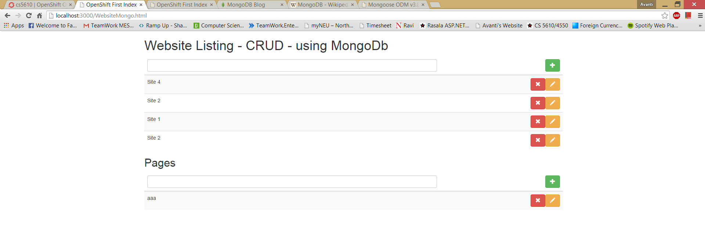

This link shows the output returned in json format
Click Here to see the Output

This Experiment is continuation of Experiment 34
MongoDB (from humongous) is a cross-platform document-oriented database.
Classified as a NoSQL database, MongoDB eschews the traditional table-based relational database structure in favor
of JSON-like documents with dynamic schemas (MongoDB calls the format BSON),
making the integration of data in certain types of applications easier and faster.
Released under a combination of the GNU Affero General Public License and the Apache License,
MongoDB is free and open-source software.
In this experiment I have added a functionalitty to add new data via JSON content in Mongodb database hosted on the Open Shift
where the schema can be shown as below for ech page and a website.
Description :
Above code snippet will post a json response to the mongodb server hosted on openshift with the given connection link.
where the websites will have 0 or more pages to add the new data using http post method.
The above code shows that there is a dependancy of two modules that are
1. multer
used for parsing multipart/form-data
2. body-parser
used for for parsing application/json